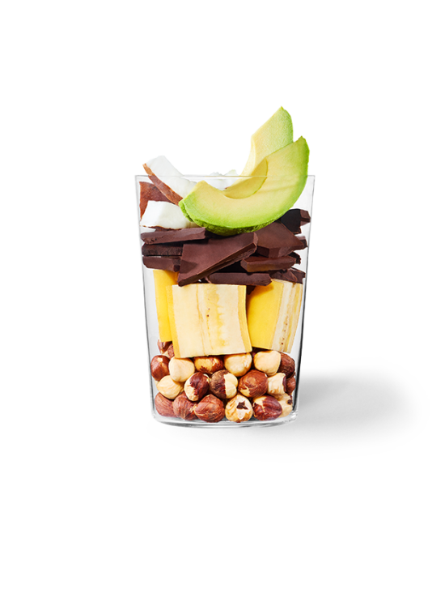
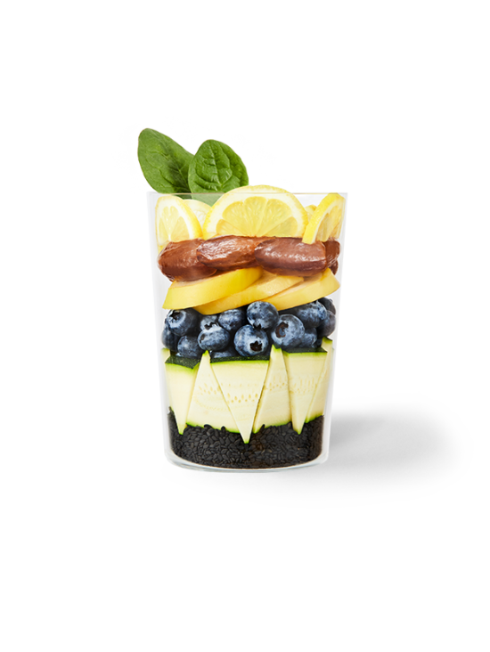

Chocolate Hazelnut

How do real people feel about this drink?
- Whenever I roast hazelnuts for a recipe, I end up with 1/4 cup or so left over – perfect for a single serving of this smoothie! I’m looking forward to trying this.
- We go through jars of Nutella in our house. Nutella crêpes feature on our lunchtime menu at least weekly. Thanks for a great Nutella recipe.
- Thinking this would be good heated for those winter days, too.
Authors
- Jessica Gavin, 22
Rate: 5/5 - Mairéad, 19
Rate: 4/5 - PK Madsen, 37
Rate: 5/5
Black Sesame

How do real people feel about this drink?
- Learned I don't like black sesame... Couldn't drink it, though my husband liked it.
- Open Sesame! I loved the sesame flavor in this, it was just the right amount, not overpowering. It had a smooth consistency, not gritty.
- If you like Thahini or sesame anything, this smoothie is for you! I love the nutty flavor of the sesame plus the blueberries! Definitely one of my favorites!
Thanks to the Authors
- Cris, 27
Rate: 2/5 - Donna Z, 30
Rate: 3/5 - Nadine M, 27
Rate: 5/5